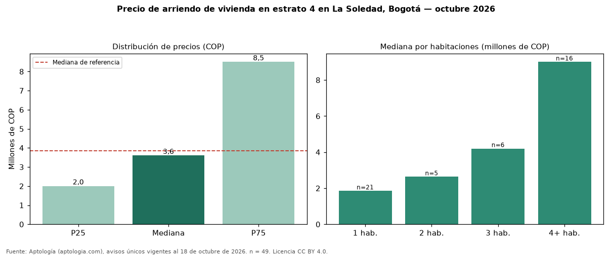

Precio de arriendo de vivienda en estrato 4 en La Soledad, Bogotá — octubre 2026
Con 49 avisos únicos, el canon mediano de vivienda en estrato 4 en arriendo en La Soledad, Bogotá es COP 3.600.000 al mes. Frente a toda la oferta de arriendo en La Soledad (COP 3.850.000), la diferencia es de 6 % por debajo. El rango intercuartílico va de COP 2.000.000 a COP 8.500.000 (razón 4,2). Por metro cuadrado, la mediana es COP 41.141/m² (+2 % frente a COP 40.519/m²). Cruzando con la oferta de venta equivalente, la rentabilidad bruta implícita es 9,7 % anual. Por habitaciones: 1 habitación, COP 1.850.000 (n = 21); 2 habitaciones, COP 2.633.000 (n = 5); 3 habitaciones, COP 4.200.000 (n = 6); 4 o más habitaciones, COP 9.000.000 (n = 16). El área mediana es 73 m² (referencia: 88 m²). Datos abiertos CC BY 4.0 de Aptología; fuente y búsqueda de inmuebles: https://www.aptologia.com/estrato-de/bogota/la-soledad. Archivos: PDF de 2 páginas, CSV con las cifras y gráfica PNG.

| Avisos únicos | 49 |
|---|---|
| Percentil 25 | COP 2.000.000 |
| Mediana | COP 3.600.000 |
| Percentil 75 | COP 8.500.000 |
| Mediana por m² | COP 41.140 |
Fuente: avisos vigentes de portales inmobiliarios recopilados por Aptología, deduplicados (mínimo 30 avisos únicos por celda). Precios pedidos, no cerrados. Fecha: 2026-10-18.